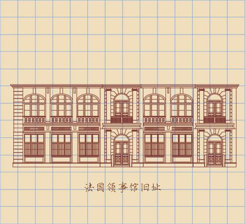

所在街区：江岸区洞庭街81号 建筑风格：古典主义 建造年代：1865年 现存情况：已荒废

汉口洞庭街81号。汉口洞庭街的街边有一小花园，两扇厚厚的木门向两边敞开，茂密的花木间藏着一幢式样古朴的小楼——西方国当年驻汉口八大总领事馆之一——汉口法国总领事馆旧址。 汉口法领事馆，1865年建，南亚殖民风格庭园建筑，设计与建造者不详，二层砖木结构，上下两层外廊，一层拱券门，二层拱券窗，石柱栏杆，麻石墙面，主入口方柱门斗，门斗上层为阳台，红瓦屋面，烟囱和壁炉，木地板，木百页，室内非毛坯深褐色的调子凉爽而温润——《情人》和《印度支那》(两部法国电影)，这样子的镜头很多。
"和汉口其他租界不同，法租界巡捕房由法国领事直接管理，其人员的任命、停职、罢免等由领事负责。巡捕房警察的开支由工部局负担……"
法租界工部局办公楼，也就是1949年后的武汉市卫生防疫站，汉口岳飞街(霞飞大将军路)21号，1895年建成，1896年法工部局及巡捕房入内办公。
砖木结构及砖混结构，一幢面积宏大的建筑体，占据车站路、岳飞街、中山大道三条街围合的一个大面积街区，因建筑年代早且资料散失，设计者和施工者不清楚，推测为西方设计师及上海施工队。
巨大的红砖楼房，宽厚敦实，如一只趴在地上的狮子。地上两层，地下一层，花岗岩基座凸凹不平、坚固无比，似乎想在汉口留存永久。
法兰西风完美呈现，曾经是汉口中山大道下段最引人注目的建筑物。